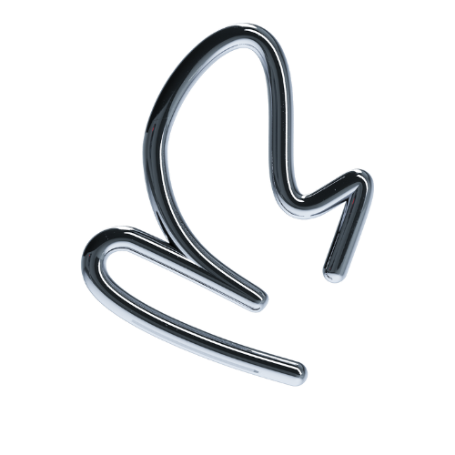
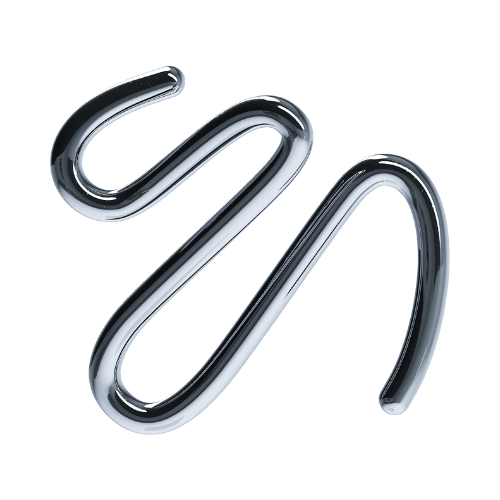
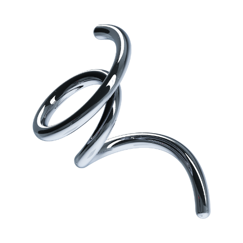

<div class="container">
  <div class="wrap">
    <div class="container-main">
      <div class="box">
        
        <h4>Motivación</h4>
        <p>
          Cuando encuentro un área desconocida, me esfuerzo al máximo por
          aprender y dominarla. Dedico tiempo a la autoformación a través de
          cursos, tutoriales y proyectos personales, asegurándome de estar
          siempre actualizado con las últimas tendencias y prácticas de la
          industria.
        </p>
      </div>
      <div class="box">
        

        <h4>Organización</h4>
        <p> Soy meticuloso en la planificación y ejecución
        de tareas, asegurándome de cumplir con los plazos establecidos. Utilizo
        herramientas de gestión de proyectos para mantener una estructura clara
        y organizada en mi trabajo, lo que facilita la colaboración y la
        comunicación con los clientes y compañeros de equipo.</p>
      </div>
      <div class="box">
        

        <h4>Creatividad</h4>
        <p>
          Me encanta experimentar con nuevas ideas y enfoques, y siempre estoy
          buscando maneras de hacer que los sitios web sean más interactivos y
          agradables para los usuarios. Esta capacidad de pensar fuera de lo
          convencional me permite ofrecer soluciones únicas que realmente marcan
          la diferencia.
        </p>
      </div>
    </div>
  </div>
</div>
